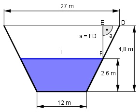

Aufgabe 202 Wie groß sind der Querschnitt A des Kanals und die Länge a?

Der Querschnitt ist ein Trapez: 27 m + 12 m A = -------------- * 4,8 m = 93,6 m2 2 Der Kanal setzt sich aus 2 Trapezen zusammen: l + 12 27 + l 93,6 = -------- * 2,6 + -------- * (4,8 – 2,6) |*2 2 2 187,2 = (l + 12) * 2,6 + (27 + l) * 2,2 187,2 = 2,6l + 31,2 + 2,2l + 59,4 187,2 = 4,8l + 90,6 | -90,6 4,8l = 96,6 | :4,8 l = 20,1 m Satz von Pythagoras im Dreieck FDE: 27 – 20,1 a2 = 2,22 m2 + (-----------)2 m2 2 a2 = 4,8 m2 + 11,9 m2 = 16,5 m2 |√ a = 4,1 m